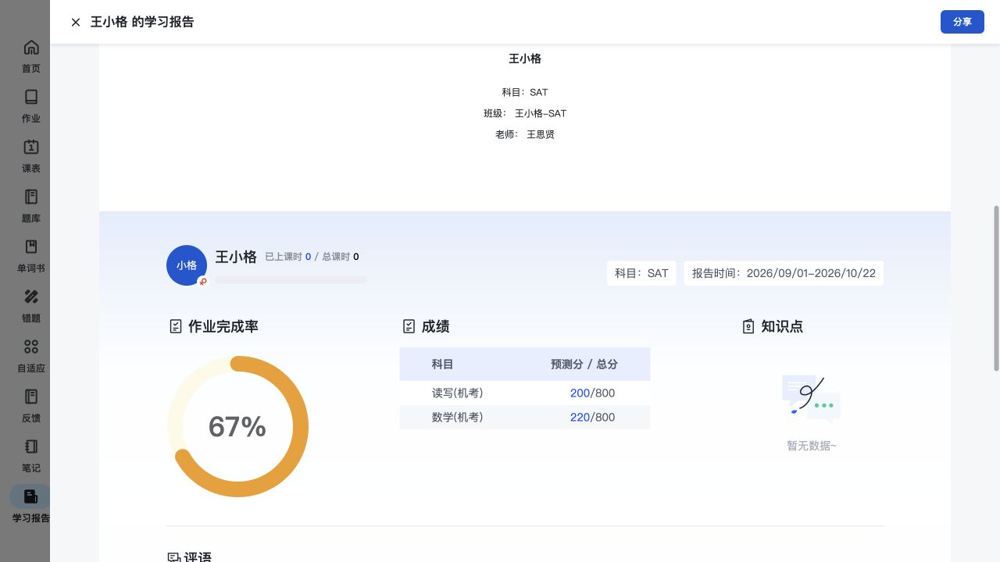
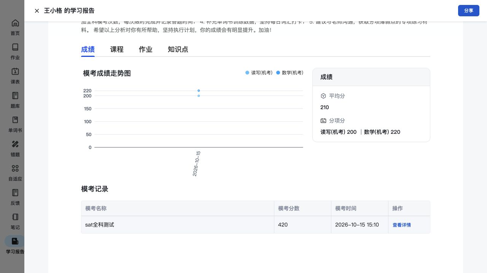
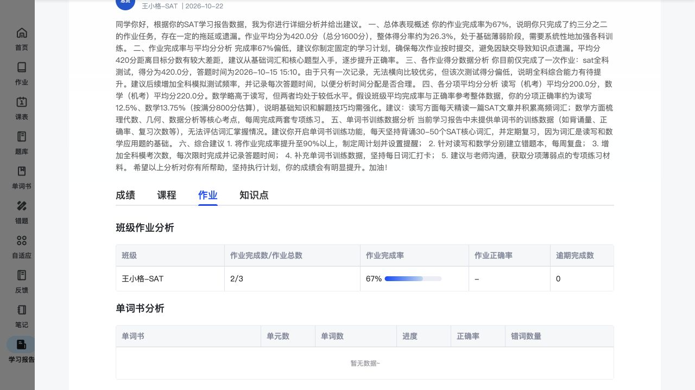
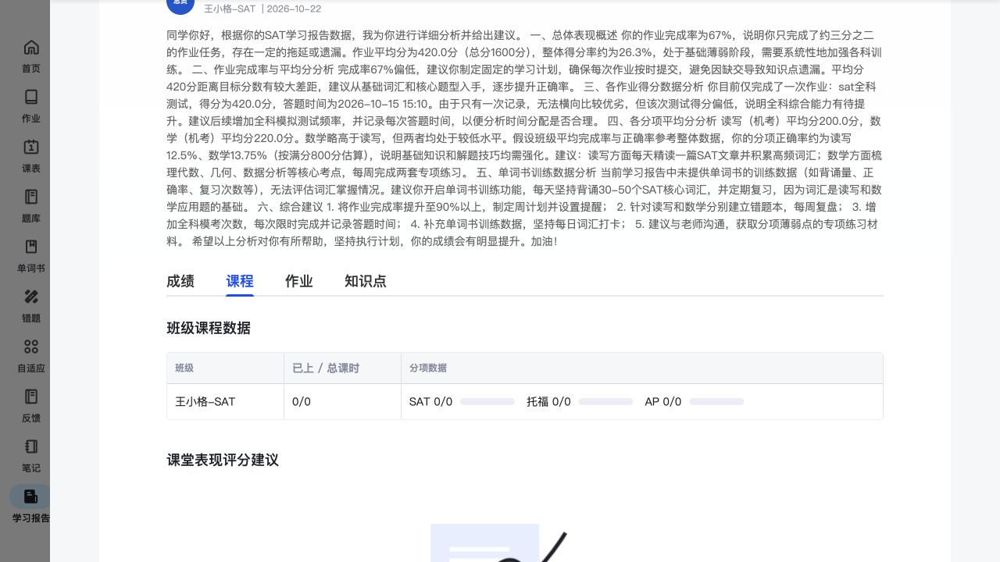
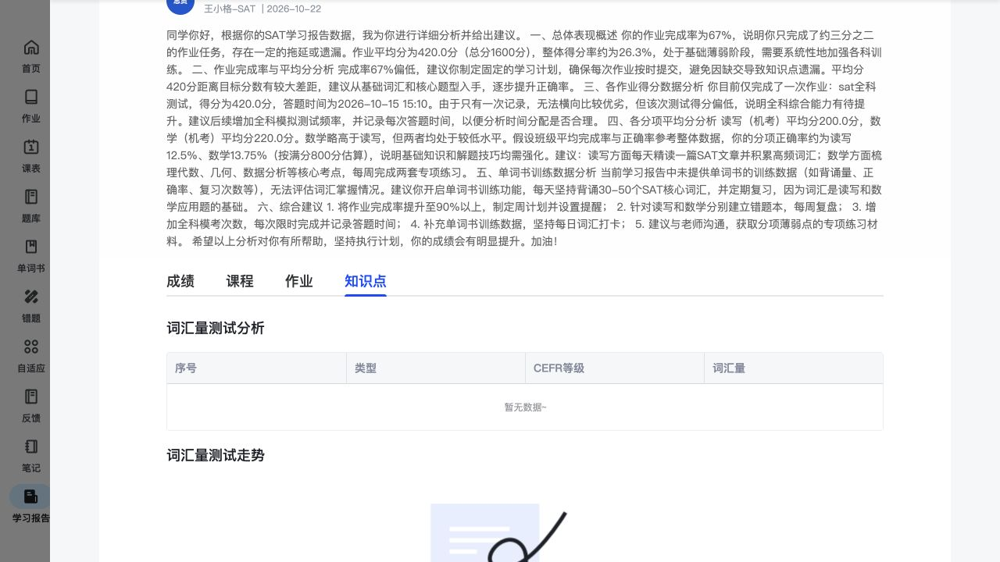

学习报告：回顾一段时间的学习情况
学习报告把一个周期的成绩、课程、作业和知识点放在一起，并保留老师评语。学生可以先看总结，再查看各项学习情况，或用链接和二维码分享报告。
功能定位与页面结构
学习报告
1. 找到阶段报告按报告周期、科目和生成老师查看报告卡片，预览已有报告。
2. 查看总结与明细概览和老师评语 → 成绩／课程／作业／知识点四个页签。
3. 分享报告生成分享链接或二维码，供后续沟通使用。
核心功能清单
下载核心功能对比清单阶段学习报告
按周期查看学习总结，了解完成情况、成绩和老师建议。
- 报告卡片保留周期、科目、生成老师和日期，并标记是否有教师评语。
- 报告概览展示学生、班级、老师、已上课时、作业完成率、成绩分项与知识点区域。
- 老师评语在报告中单独展示，保留反馈老师、班级和日期。



对比时可关注：是否能把一个阶段的学习过程和老师建议整理成方便回看的成果。
当前主要样例为2026-09-01至10-22的SAT报告；教师生成与学生接收的对应过程见独立联动说明。
相关说明：独立联动说明 · 报告生成与学生查看
学习情况明细
从阶段总结继续查看成绩变化、课程进度、作业投入和知识点情况。
- 成绩：模考趋势、平均分、分项成绩及模考记录；记录提供查看详情入口。
- 课程：按班级和科目展示已上／总课时，另有课堂表现评分和建议区域。
- 作业：按班级汇总完成数／总数、完成率、正确率和逾期完成数；单词书另列单元数、词数、进度、正确率和错词数量。
- 知识点：设置词汇量与走势、知识点正误及掌握程度、练习次数、知识图谱等栏目。


对比时可关注：总结是否能追溯到学习记录，兼顾成绩变化、学习进度和练习投入。
当前课程为0/0，词书和知识点多处为空；空白区域仅说明已有栏目，不推定其图表和计算规则。
相关说明：单次作业结果的完整说明
报告分享
通过链接或二维码分享一份阶段报告，方便围绕学习情况沟通。
- 报告列表和报告预览都提供分享入口。
- 分享弹窗包含链接、复制链接、二维码和下载二维码。

对比时可关注：是否方便把阶段学习情况用于学生、家长和老师之间的沟通。
已看到分享形式；链接的有效期、访问条件和打开后的内容尚待补充。
与其他模块的关联
- 首页展示当前安排，作业结果针对一次任务；学习报告回顾一个阶段，统计周期与前两者不同。
- 本章只说明学生怎么看报告。教师生成、填写评语以及同一报告如何到达学生端，统一引用独立联动说明。
- 报告中的模考详情继续使用共用结果组件；这里保留阶段趋势、汇总和详情入口，不重复整套解析。
待补内容
- 预测分、平均分和完成率的计算范围；报告生成后是否固定或自动刷新。
- 有内容的课程评价、词书分析和知识点图谱样例；现有报告对应区域为空或零值。
- 分享链接的访问条件、有效期和二维码打开后的页面。
操作依据
保留8组截图与完整页面观察，基础操作不单列为核心功能。
辅助截图：当前缺少数据的课程和知识点栏目


本轮产生的测试记录与状态变化
- 仅预览已有报告及分享弹窗，未新增报告或外发链接。
逐项操作记录与截图（按需查看）
- SR01 截图 · 页面观察 — 学习报告列表按周期展示报告，含科目、生成老师、日期和教师评语标记，支持预览/分享；已见2026-10-22教师生成的SAT报告。
- SR02 截图 · 页面观察 — SAT报告包含学员、班级、老师、周期、课时和作业完成率，成绩分项与教师评语；知识点暂无数据。
- SR03 截图 · 页面观察 — 报告显示王思贤2026-10-22的完整评语，来源于教师端保存的阶段报告；评语中的AI推断和算术不作为本调研事实。
- SR04 截图 · 页面观察 — 成绩分项包含模考趋势、分项分和模考记录，记录有查看详情入口。
- SR05 截图 · 页面观察 — 课程分项按班级/科目显示已上与总课时，并有课堂表现评分建议区域；当前0/0、建议为空。
- SR06 截图 · 页面观察 — 作业分项按班级呈现完成数/总数、完成率、正确率及逾期完成数，并有单词书进度/正确率/错词分析区域。
- SR07 截图 · 页面观察 — 知识点分项设置词汇量测评/走势、知识点正误与掌握程度、练习次数和知识图谱；当前多处为空，按字段记录而不补结论。
- SR08 截图 · 页面观察 — 学习报告实际分享弹窗提供链接、复制、二维码和下载二维码，本次未外发。页面文本树另含科目AP的未显示卡片模板，截图未见该内容，不据此认定可见显示差异。